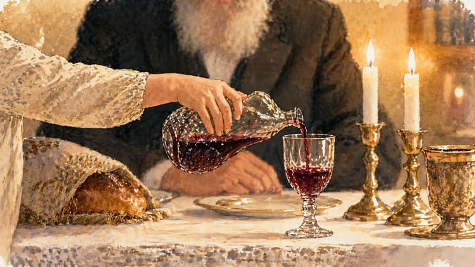
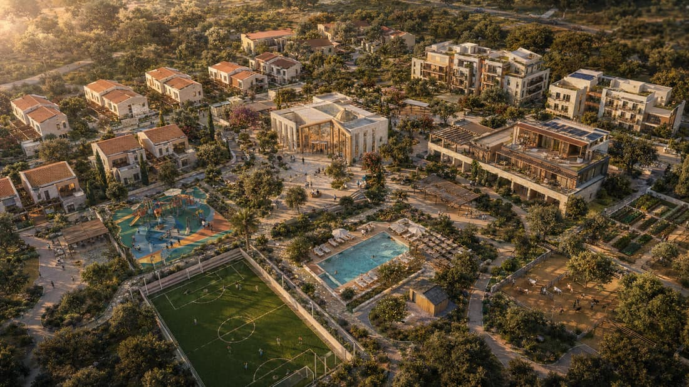
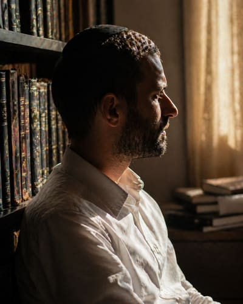

מסמך מבוא
בית אחד לשלושה דורות
כפר חרדי מתוכנן בצפון הארץ, שמשלב תחת קורת גג אחת ילדים מרווחה, נערות צעירות, ומבוגרים פעילים. קהילה אחת שכל מסלול בה תורם לאחר.
פרק א · איך הרעיון נולד
בראש השנה תשפ״ו ישבנו אצל חמותי בארוחה. סבא של אשתי, בן 98, ישב לצידנו. הוא גר אצלם כבר שנים. שאלנו אותה איך היא מסתדרת לטווח ארוך, והעלינו את האפשרות להעביר אותו לדיור מוגן.
"הוא ימות שם. כאן הוא רואה את הנכדים והנינים שבאים. שם הוא יהיה לבד."

המשפט הזה לא יצא לי מהראש. חשבתי על קרובות משפחה שגדלו בדירות רווחה. על הילדים שאני פוגש חמש־עשרה שנים בעבודת חסד. על האנשים שאני מטפל בהם במד״א, שמסתיימים את חייהם בלי משפחה לידם. אנשים מכל גיל מבקשים אותו דבר: בית, אנשים שמכירים אותם, ומקום שאליו אפשר לחזור.
ואז זה התחבר. אם בית אבות כפי שאנחנו מכירים מנתק את הזקן מהמשפחה, ופנימייה מנתקת את הילד מהבית, ודירת רווחה מנתקת את הנערה מהמודל המשפחתי — אולי הפתרון הוא לא לתקן את שלושת המוסדות, אלא לבטל את ההפרדה ביניהם. לבנות מקום אחד שבו אף אחד לא לבד.
אז למה לא לבנות את כל זה במקום אחד.
פרק ב · הרעיון המרכזי
בית אברהם הוא הכפר הראשון בישראל שבו ילדים מרווחה, נערות צעירות ומבוגרים פעילים חיים תחת קורת גג אחת. לא שלושה מוסדות זה לצד זה — קהילה אחת שכל מסלול בה תורם לאחר. כל אחד נותן את מה שלשני חסר.
שלב ראשון · ילדים 0–12
מגיעים ממערכת הרווחה. גרים במשפחתון של 5–8 ילדים בליווי זוג צעיר ש"מאמץ" אותם בשליחות של 2–5 שנים. אווירה ביתית, חיידר או בית יעקב, חוגי אחר הצהריים, ולימוד עם אברך.
שלב שני · נוער 13–18
פנימייה לבנים, פנימייה לבנות. הבנים לומדים בישיבה, הבנות בבית יעקב. הכפר נשאר הבית — שבתות, בן הזמנים, חופשות ואירועים אישיים.
שלב שלישי · נערות 18–22
דירות עצמאיות בכפר. חלק ממשיכות מהפנימייה, חלק מגיעות מבחוץ ב-18. עובדות בכפר, מתחנכות לחיי משפחה בליווי עו״ס. רבות חוזרות אחרי החתונה כזוגות צעירים שמאמצים משפחתון.
שלב רביעי · מבוגרים 70+
מגיעים מהקהילה בדיור מוגן בתשלום. ממשיכים בחיי תורה, סדר לימוד עם אברכים בבוקר, ומלווים את הילדים והנערות סביבם. קהילה פעילה ומלאת חיים.

פרק ג · למה זה ייחודי
01
כל הפנימיות וכל בתי האבות בארץ מיועדים לאוכלוסייה אחת. בית אברהם הוא הראשון שבונה קהילה רב־דורית כמודל הליבה.
02
מבוגר שמשלם דיור מוגן מסבסד את הילד שמשרד הרווחה לא מכסה במלואו. נערה שמטפלת בילד לומדת את עצמה. ילד שיושב עם מבוגר נותן לו סיבה לקום בבוקר. מעגל, לא חסד חד־צדדי.
03
מוסד חרדי על כל המשתמע: בית כנסת קבוע, רב, משגיח כשרות, אברכים בסדר לימוד עם המבוגרים בבוקר ועם הילדים אחר הצהריים, הפרדה מגדרית מלאה מגיל שש ומעלה. אופי תורני־ישיבתי, פתוח לקליטת ילדים מבתים שונים בגיל הרך.
04
אנחנו לא מקימים עוד פנימייה ולא עוד בית אבות. אנחנו מסנתזים מודלים בין־דוריים שכבר הוכיחו את עצמם בעולם, ובונים את היישום הראשון בעולם המשלב שלוש אוכלוסיות תחת זהות חרדית־ישראלית.
בית אברהם הוא מוסד חרדי. החזקה הזאת לא נשמרת על ידי כללים על הקיר, אלא על ידי נוכחות חיה של תורה. האברכים הם הציר המרכזי של החיים הרוחניים בכפר:
פרק ד · מי עומד מאחורי זה

השם שלי הוא אברהם. לא במקרה. אברהם אבינו בנה את עצמו בעמוד החסד, פתח אוהל לכל ארבע רוחות וקיבל אורחים זרים כאילו היו בני בית. הדרך שלו תיארה את כל מה שאני מנסה לבנות הרבה לפני שהבנתי אותה.
חמש־עשרה שנים אני מתנדב בארגוני חסד. לא מהמשרד, מהשטח. ביקור חולים, ליווי משפחות בתקופות קשות, סיוע לקשישים, וחלוקת מזון. ארבע שנים אני חובש מד״א פעיל, יוצא לקריאות גם באמצע יום עבודה. למדתי לראות אנשים בעיתות משבר, ולמדתי שמה שעוצר אותם מלשבור הוא לא תרופה ולא כסף — זו נוכחות אנושית קבועה.
במקביל בניתי את FutureFlow — חברה שמפתחת מערכות תוכנה לארגונים חברתיים ועסקיים בישראל. לקוחות אמיתיים, מוצרים שעובדים יום־יום, צוות שבונה לאורך שנים. זאת הוכחה שאני יודע לקחת רעיון ולהפוך אותו לדבר חי. בית אברהם הוא הצעד הבא — לקחת את כל הניסיון הזה ולנתב אותו לדבר אחד שגדול מאיתנו.
"הָאָדָם לֹא לְעַצְמוֹ נִבְרָא אֶלָּא לְהוֹעִיל לַאֲחֵרִים." — ר' חיים מוולאז'ין
זה המוטו שלי. בית אברהם הוא הצורה השלמה ביותר שמצאתי לקיים אותו.
מוסד שמשפיע על שלוש אוכלוסיות פגיעות לא יכול להיבנות על תחושת בטן של מייסד אחד. בית אברהם בנוי מהיום הראשון עם הנהלה ראשית, צוות מקצועי בכפר (50–60 אנשים במשרה מלאה — מנהלי יחידות, עו״ס בכירים, צוות רפואי, רב, משגיח כשרות, אברכים), ועדת יועצים מקצועית (3–7 בכירים בתחומי רווחה, רגולציה, אדריכלות, פילנתרופיה ורבנות), ודירקטוריון רב־חברי. החזון יישמר בתקנון העמותה ובהרכב הדירקטוריון, לא בידיו של אדם אחד.
פרק ה · שאלות נפוצות
מבחר שאלות שכבר עלו, ושעולות באופן טבעי כשנפגשים עם הרעיון בפעם הראשונה. התשובות משקפות את העמדה הנוכחית של בית אברהם.
כי השלושה לא רק חולקים מקום — הם נותנים אחד לשני בדיוק את מה שחסר להם. ילד צריך נוכחות של מבוגר. מבוגר צריך ילדים סביבו. נערה צריכה מודל למשפחה תקינה. כשמשלבים אותם, מקבלים דבר שכל מסלול בנפרד לא יכול לתת. בנוסף, יש לזה היגיון כלכלי: מטבח אחד במקום שלושה, מערך רפואי אחד, בית כנסת אחד — ודיירי הדיור המוגן בתשלום מסבסדים את עלויות הילדים שמשרד הרווחה לא מכסה במלואן.
ילדים בגילי 0–18 שמשרד הרווחה זיהה כזקוקים למסגרת חוץ־ביתית קבועה — לא נוער נושר, אלא ילדים שזקוקים לבית. בעיקר ילדים חרדיים, אבל פתוחים לילדים מבתים מסורתיים בגיל הרך עם התאמה. ילדים עם לקויות למידה — כן, נבנה מסגרת חינוכית עם תמיכה הולמת. ילדים על הספקטרום האוטיסטי — לא, הצרכים הספציפיים שלהם דורשים מסגרת ייעודית עם מומחיות אחרת.
זוג חרדי צעיר (בני 25–35) שמתגורר בבית המשפחתון לתקופה של 2–5 שנים, בתמורה לדיור חינם בכפר ולשכר חודשי. הם משמשים כדמות הורית עקבית לילדי המשפחתון — לא רק מטפלים, אלא "אבא ואמא". מקבלים הכשרה מקצועית בליווי עו״ס וצוות חינוכי. כשמסיימים את שירותם, הזוג הבא נכנס במעבר מתוכנן.
אזור קרית אתא והסביבה — צפון הארץ. אנחנו מחפשים כעת קרקע מתאימה בגודל של כ-100 דונם. בחירת המיקום מתבססת על קרבה לקהילות חרדיות פעילות, נגישות תחבורתית, ועלות סבירה לרכישה. אם תכיר/י קרקע פוטנציאלית, נשמח שתספר/י לנו.
בית אברהם בנוי על מודל של גיוון מקורות הכנסה — לא תלות בערוץ אחד. ארבעה ערוצים: תקציבי משרד הרווחה (לילדים ולנערות), תשלומי דיירי הדיור המוגן (מהמבוגרים), הכנסות עצמיות מפעילויות הכפר (קייטרינג, מכבסה, אירוח, חוגים פתוחים לקהילה), ותרומות שוטפות. אם תרומות יורדות, שאר הערוצים ממשיכים להחזיק את הכפר.
פרק ה (המשך) · שאלות נפוצות
אופי תורני־ישיבתי בבסיס. האברכים מגיעים מישיבות בצפון, וכך גם הרב והמשגיח. אנחנו פתוחים לקליטת ילדים מבתים חסידיים וספרדיים בגיל הרך — בגיל הזה ההבדלים הסגנוניים פחות קריטיים, וברגע שילד נקלט הוא נטמע במסגרת הכפר. הסגירה הסופית של הזהות התורנית תיקבע יחד עם הרב והוועדה הרבנית שיצטרפו לדרך.
הפרדה מלאה מגיל 6 ומעלה. משפחתוני בנים ומשפחתוני בנות נפרדים פיזית. חיידר ובית יעקב נפרדים. דירות נערות הן באגף נשי לחלוטין. אגפי הדיור המוגן למבוגרים נפרדים בין גברים לנשים. ארוחות חול נפרדות. בית כנסת עם מחיצה. צוות נשי עובד עם בנות, צוות גברים עם בנים. גיל הרך 0–5 מעורב, כמקובל בחברה החרדית.
שני צדדים. ראשית, לא לכל ישיבה יש פנימייה — בעיקר בישיבות ספרדיות וחסידיות, רבות מהן בלי פנימייה כלל. בן שלומד בישיבה כזו צריך מקום לישון, לאכול, ולחזור אליו אחר הצהריים ובסופי שבוע. שנית, וזה לא פחות חשוב — גם בן שלומד בישיבה עם פנימייה זקוק לבית. ישיבה היא מקום לימוד, לא בית. בן הזמנים, שבתות, מחלה, משבר, סיום מסכת, חתונה — בכל אלה הבן זקוק למקום שהוא הבית שלו, לא לישון בלובי של ישיבה ריקה.
שבת היא הזמן בו הכפר הופך למשפחה אחת. תפילות בבית הכנסת המרכזי. סעודות שבת אצל המשפחתונים, וסעודה משותפת בחדר האוכל לחלק מהאוכלוסייה. שירה, דברי תורה, "שלום עליכם" בכל בית משפחתון. בני הישיבה שחזרו לשבת הם חלק מהתמונה. חופש מלוח זמנים — רק תורה, סעודה, שינה, וקהילה.
הרב הקבוע יבחר על ידי ועדה הכוללת את המייסד, יועץ הלכתי בכיר, ונציגי האוכלוסיות. אנחנו מחפשים רב עם ניסיון מוסדי קודם, יכולת לעבוד עם דורות שונים, ופתיחות לאתגרים של מוסד חדשני בלי לוותר על האותנטיות. הליך הבחירה יחל בשלב גיוס הצוות הבכיר.
שני שורשים. ראשית — שמי המלא הוא אברהם. אברהם אבינו בנה את עצמו בעמוד החסד, פתח אוהל לכל ארבע רוחות וקיבל אורחים זרים כאילו היו בני בית. שנית — השם הוא הבטחה למה שהמקום אמור להיות: בית, לא מוסד. יחד עם זאת, השם אינו קדוש. אם תורם עוגן ירצה להנציח שם של יקיר — שם הכפר ניתן לשינוי. החזון נשאר, השם יכול להתחלף.
לרשימת שאלות מלאה — כולל פירוט על המודל, התפעול, והרגולציה:
לשאלות נוספות באתר ←beit-avraham-site.vercel.app/faq.html
פרק ו · הדרך שלפנינו
שלב 1 · 2026 (פעיל)
השקת אתר אינטרנט. גיוס ועדת יועצים ראשונה. שיחות עם מנהלי מוסדות מנוסים. רישום עמותה רשמית. בנייה של מסמכים מקצועיים.
שלב 2 · 2026–2027
פגישות עם תורמים פוטנציאליים בארץ ובחו״ל. גיוס תורם עוגן ראשון. איתור קרקע מתאימה באזור הצפון. בדיקת היתכנות מול משרד הרווחה.
שלב 3 · 2027–2028
עבודה עם משרד אדריכלים מנוסה במוסדות רווחה. אישורי רגולציה ממשרדי הרווחה, החינוך, והבריאות. גיוס מימון בנייה.
שלב 4 · 2028–2030
בנייה בשלבים, החל מהמשפחתונים והבית כנסת המרכזי, ולאחר מכן הדיור המוגן ומבני השירות. גיוס ראשי הצוות הבכירים.
שלב 5 · 2030–2032
פתיחה הדרגתית: התחלה עם קבוצה קטנה של ילדים במשפחתונים, נערות בוגרות, ומבוגרים ראשונים. כניסה לקצב מלא תוך 18–24 חודשים.
לוחות הזמנים תלויים בקצב גיוס תורם עוגן ובאישורי רגולציה. הם מציגים תוואי ריאלי, לא הבטחה.
בית אברהם בשלב שבו החזון בנוי, ועכשיו דרושים אנשי מקצוע, פותחי דלתות, ושותפי דרך. אם אחד מהבאים מתאר אותך — נשמח לדבר.
אבי (אברהם) ברונר · מייסד
דוא״ל: avi@futureflow.co.il
קרית אתא, ישראל
לפרטים נוספים: beit-avraham-site.vercel.app
"עוֹלָם חֶסֶד יִבָּנֶה" (תהילים פ״ט)